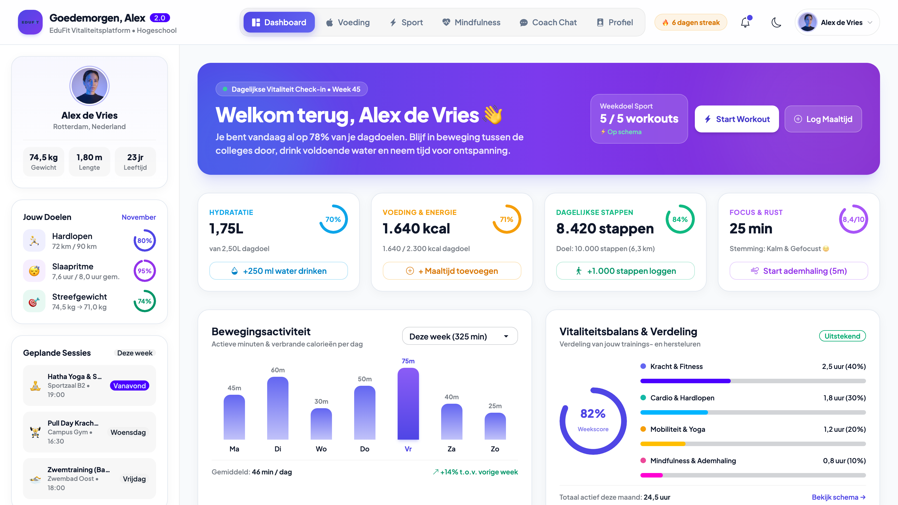

EduFit
Een gezondheids- en vitaliteitsapp ontwikkeld in opdracht van BureauFIT voor het Grafisch Lyceum Rotterdam (GLR). EduFit combineert technologie en persoonlijke begeleiding om docenten te ondersteunen bij hun fysieke en mentale welzijn.

JAAR
2025
ROL
Full-stack Developer
UI/UX Designer
FO & Technisch Ontwerp
Tester
DIENSTEN & TECH
HTML5, CSS3 & Bootstrap
JavaScript & PHP
Use Case & Database (ERD)
LIVE PROJECT
Aanleiding & Doel
Veel docenten van het Grafisch Lyceum Rotterdam hebben te maken met een hoge werkdruk, stress en een zittende levensstijl. Samen met mijn projectteam (Eryk, Dyar en Nino) ontwikkelden we voor BureauFIT EduFit: een toegankelijke webapplicatie die medewerkers helpt bewuster en gezonder te leven en zo hun energie en werkgeluk te verbeteren.
Functionaliteiten & UX
De app is zo ontworpen dat gebruikers binnen maximaal 3 klikken hun doel bereiken via vijf overzichtelijke hoofdschermen: een persoonlijk Dashboard, een Voedingstracker met gezonde recepten op basis van caloriebehoefte, Persoonlijke sportschema's, een directe Chatfunctie met een coach en een Mindfulness-module met ademhalings- en meditatieoefeningen.
Gebruikersrollen & Techniek
Voor het functioneel en technisch ontwerp heb ik onder andere het Use Case Diagram en de technische specificaties uitgewerkt. Het systeem ondersteunt drie rollen: Medewerker, Coach (met een eigen beheeromgeving voor schema's en recepten) en Administrator. De front-end is responsive opgebouwd met HTML5, CSS3, Bootstrap en JavaScript, gekoppeld aan een relationele database (ERD) met aandacht voor AVG-privacy, server-side validatie en wachtwoord-hashing.
Testen & Live Demo
Tijdens de testfase heb ik de applicatie handmatig doorlopen op kritieke gebruikersflows zoals registratie, authenticatie en data-weergave, zodat bugs (waaronder een inlog-issue) tijdig zijn opgelost. Bekijk het werkende prototype live via: edufit-alpha.vercel.app/#dashboard